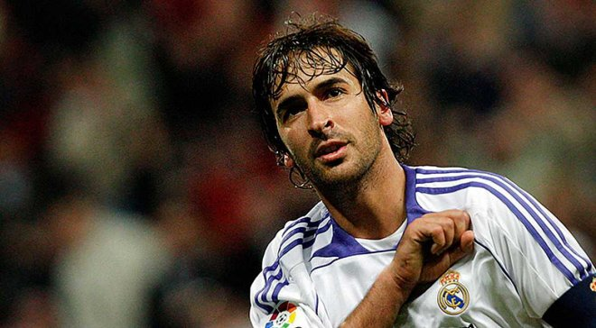
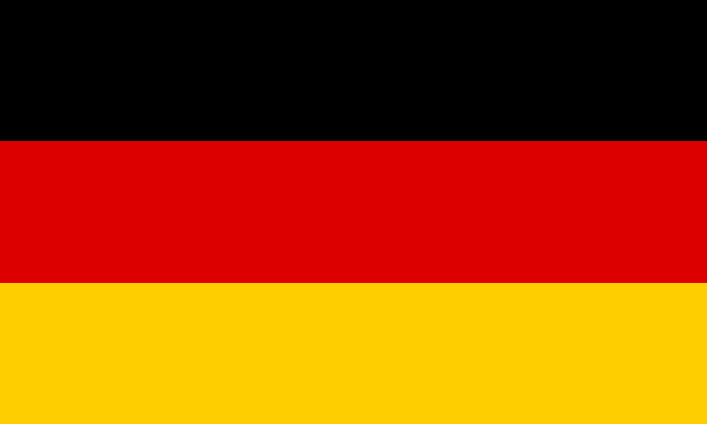
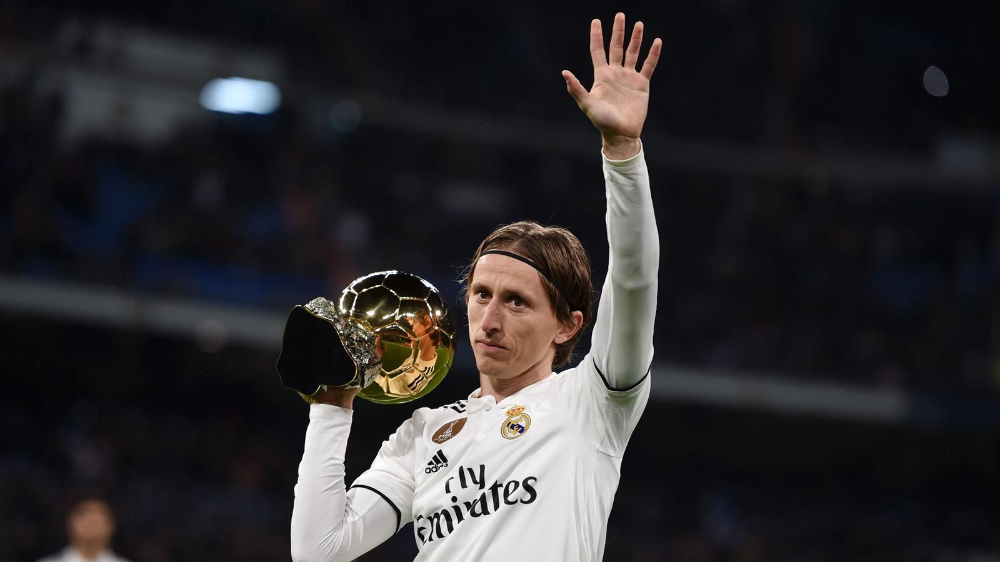
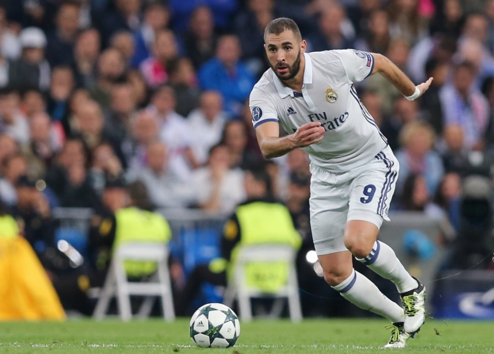
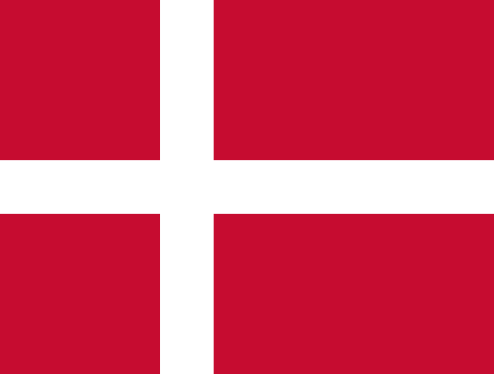

Відомі гравці клубу
Володарі «Золотого м'яча»
Наступні футболісти отримали «Золотий м'яч» France Football, виступаючи за «Реал»: Альфредо Ді Стефано
Альфредо Ді Стефано
 Альфредо Ді Стефано - 1957, 1959
Альфредо Ді Стефано - 1957, 1959 Раймон Копа - 1958
Раймон Копа - 1958 Луїш Фігу - 2000
Луїш Фігу - 2000 Роналдо - 2002
Роналдо - 2002 Фабіо Каннаваро - 2006
Фабіо Каннаваро - 2006- Кріштіану Роналду - 2016, 2017
 Лука Модріч - 2018
Лука Модріч - 2018
- Кріштіану Роналду - 2013, 2014
Володарі «Золотої бутси»
Наступні футболісти отримали «Золоту бутсу», виступаючи за «Реал»:  Рауль{kind=link}
 Уго Санчез - 1990
Уго Санчез - 1990- Давор Шукер - 1998
- Кріштіану Роналду - 2011, 2014, 2015
Футболісти року за версією УЄФА
Наступні футболісти були визнані футболістами року за версією УЄФА, виступаючи за «Реал»: Фернандо Редондо - 2000
Фернандо Редондо - 2000- Зінедін Зідан - 2002
Найкращі футболісти року в Європі
Наступні футболісти були визнані футболістами року в Європі, виступаючи за «Реал»: Кріштіану Роналду
Кріштіану Роналду
- Кріштіану Роналду - 2014, 2016, 2017
- Лука Модріч - 2018
Найкращі асистенти Ліги чемпіонів УЄФА
Наступні футболісти були визнані найкращими асистентами Ліги чемпіонів УЄФА, виступаючи за «Реал»:- Рауль - 2002/2003
- Луїш Фігу - 2004/2005
-  Месут Озіл - 2010/2011
- Кака - 2011/2012
- Ангель ді Марія - 2013/2014
Найкращі бомбардири Ліги чемпіонів УЄФА
Наступні футболісти були визнані найкращими бомбардирами Ліги чемпіонів УЄФА, виступаючи за «Реал»:- Альфредо Ді Стефано - 1957/1958
 Ференц Пушкаш - 1959/1960
Ференц Пушкаш - 1959/1960- Рауль - 1999/2000, 2000/2001
- Кріштіану Роналду - 2012/2013, 2013/2014, 2014/2015, 2015/2016, 2016/2017, 2017/2018
Гравці року за версією ФІФА
Наступні футболісти були визнані футболістами року за версією ФІФА, виступаючи за «Реал»: Ікер Касільяс
Ікер Касільяс
- Луїш Фігу - 2001
- Роналдо - 2002
- Зінедін Зідан - 2003
- Фабіо Каннаваро - 2006
- Кріштіану Роналду - 2016, 2017
- Лука Модріч - 2018
Найкращі гравці чемпіонату світу
Наступні гравці були визнані найкращими гравцями чемпіонату світу, виступаючи за «Реал»:- Зінедін Зідан - 2006
- Лука Модріч - 2018
Володарі «Золотого» м'яча Клубного чемпіонату світу
Наступні футболісти отримали «Золотий м'яч» Клубного чемпіонату світу, виступаючи за «Реал»:  Лука Модріч{kind=link}
- Серхіо Рамос - 2014
- Кріштіану Роналду - 2016
- Лука Модріч - 2017
 Гарет Бейл - 2018
Гарет Бейл - 2018
Найкращі бомбардири клубного чемпіонату світу
Наступні футболісти були визнані найкращими бомбардирами клубного чемпіонату світу, виступаючи за «Реал»:- Ніколя Анелька - 2000
- Серхіо Рамос - 2014
- Гарет Бейл - 2014, 2018
- Кріштіану Роналду - 2016, 2017
Чемпіони світу
Наступні футболісти ставали чемпіонами світу, виступаючи за «Реал»: Серхіо Рамос
Серхіо Рамос
- Гюнтер Нетцер - 1974
- Хорхе Вальдано - 1986
- Крістіан Карамбьо - 1998
- Роберто Карлос - 2002
- Хабі Алонсо - 2010
- Рауль Альбіоль - 2010
- Альваро Арбелоа - 2010
- Ікер Касільяс - 2010
- Серхіо Рамос - 2010
- Самі Хедіра - 2014
- Рафаель Варан - 2018
Чемпіони Європи
Наступні футболісти ставали чемпіонами Європи, виступаючи за «Реал»:  Карім Бензема{kind=link}
- Амаро Амансіо - 1964
- Ігнасіо Зоко - 1964
- Фелікс Руїз - 1964
- Хосе Вісенте Трайн - 1964
- Улі Штіліке - 1980
- Ніколя Анелька - 2000
- Крістіан Карамбьо - 2000
- Ікер Касільяс - 2008, 2012
- Серхіо Рамос - 2008, 2012
- Хабі Алонсо - 2012
- Рауль Альбіоль - 2012
- Альваро Арбелоа - 2012
- Пепе - 2016
- Кріштіану Роналду - 2016
Олімпійські чемпіони
Наступні футболісти ставали Олімпійськими чемпіонами, виступаючи за «Реал»: Кадр з матчу
Кадр з матчу«Реал Мадрид» - «Ювентус», 2018р.
(щоб подивитись відео голу, клацніть по картинці)
- Мікель Ласа - 1992
- Альфонсо Перес - 1992
- Луїз Енріке - 1992
- Нжітап Жеремі - 2000
- Фернандо Гаго - 2008
- Есєк'єль Гарай - 2008
Володарі Кубка конфедерацій
Наступні футболісти ставали володарями Кубка конфедерацій, виступаючи за «Реал»-  Мікаель Лаудруп - 1995
- Зе Роберто - 1997
- Роберто Карлос - 1997
- Марсело - 2013
Володарі Кубка Америки
Наступні футболісти ставали володарями Кубка Америки, виступаючи за «Реал»- Зе Роберто - 1997
- Роберто Карлос - 1997, 1999
- Робіньйо - 2007
- Каземіро - 2019
Капітани клубу в чемпіонатах Іспанії
| Період | Капітан |
|---|---|
| 1928 - 1936 | |
| 1936 - 1942 | |
| 1942 - 1944 | |
| 1944 - 1949 | |
| 1949 - 1958 | |
| 1958 - 1960 | |
| 1960 - 1962 | |
| 1962 - 1971 | |
| 1971 - 1974 | |
| 1974 - 1976 |
| Період | Капітан |
|---|---|
| 1976 - 1980 | |
| 1980 - 1986 | |
| 1986 - 1988 | |
| 1988 - 1989 | |
| 1989 - 1993 | |
| 1993 - 2001 | |
| 2001 - 2003 | |
| 2003 - 2010 | |
| 2010 - 2015 | |
| 2015 - н.ч. |